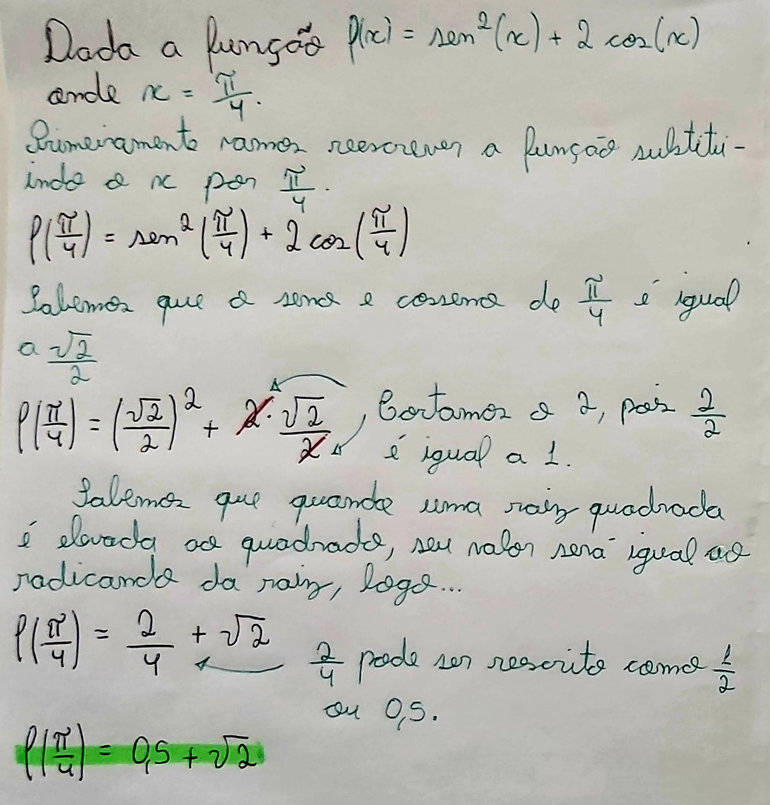
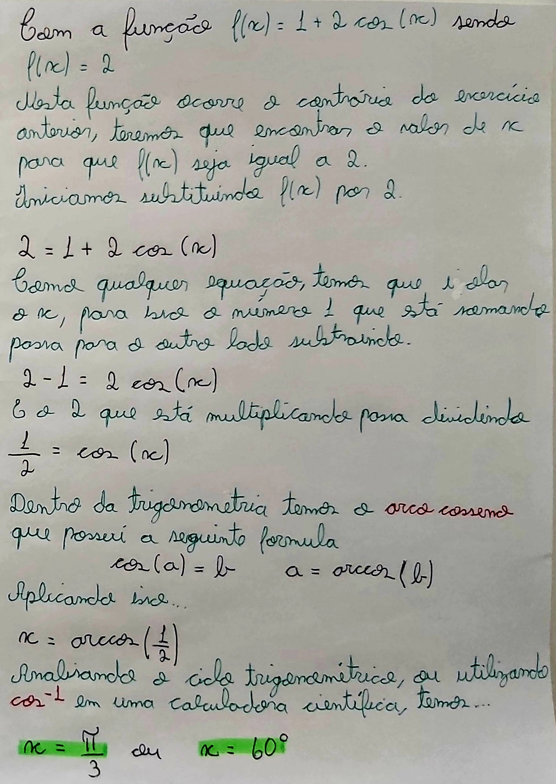
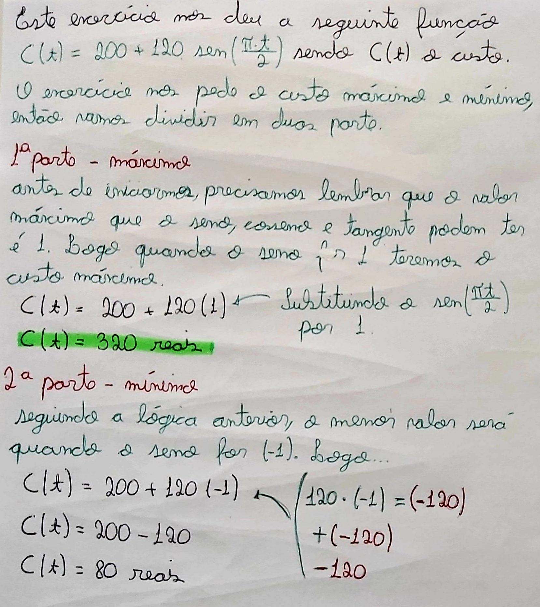
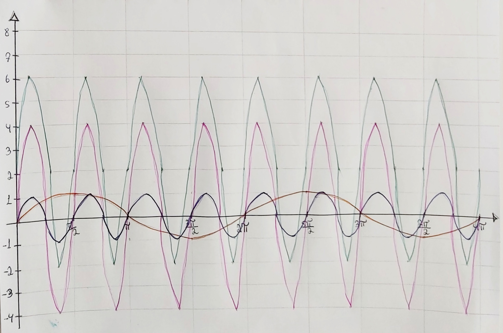

As funções trigonométricas são funções que se relacionam com os angulos de um triangulo retangulo e seus lados. Ao decorrer deste tópico, foi resolvido quatro questões de diferentes problemas relacionados as funções trigonométricas.
(Escola Brasil - UOL) Dada a função f(𝑥) = sen²(𝑥) + 2cos(𝑥), o valor numérico da função para 𝑥 = π/4 é:
(Escola Brasil - UOL) Dada a função f(𝑥) = 1 + 2cos(𝑥), seja x um ângulo do primeiro quadrante, então o valor de 𝑥 que faz com que f(𝑥) = 2 é:
(UFSM 2007) Uma gráfica que confeccionou material de campanha determina o custo unitário de um de seus produtos, em reais, de acordo com a lei C(t) = 200 + 120 . sen (π . t/2), com t medido em horas de trabalho. Assim, os custos máximos e mÃnimo desse produto são:
(MD8 - Funções Trigonométricas) Construa o gráfico da função 𝑓(𝑥) = 2 + 4sen(4𝑥)
1º passo: Construir a função seno ou cosseno original, ou seja, apenas a f(𝑥) = sen(𝑥).
2º passo: Construir a função seno modificando o perÃodo, se for >1 comprime no 𝑥, sendo 𝑥=4, logo ocorre 4 repetições em um perÃodo de 2π.
3º passo: Achar a amplitudo, para isso vamos verificar qual o valor que multiplica o seno, está função é o 4. Então sabemos que o nosso gráfico vai do -4 até o +4 do eixo y.
4º passo: Como temos um valor somando à função, isso faz com que a função suba ou desça. Ou seja, o gráfico vai ocorre do -2 até o +6. Correspondendo ao grafico verde da função.
